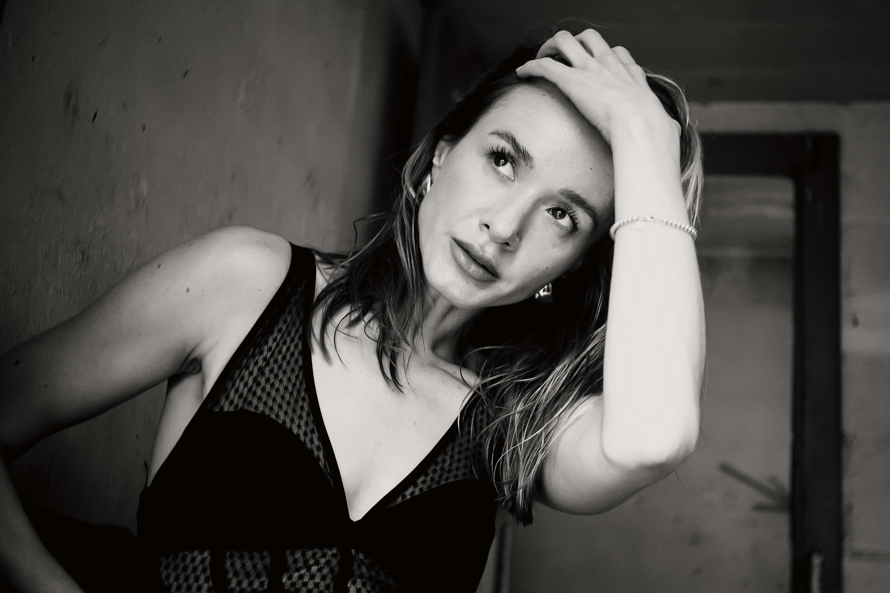

02 / About the Work
About my work
I do not photograph people as classical models, but as personalities.
I am interested in presence, character and the small moments between obvious gestures.
My work moves between portrait, form study and documentary observation. The images are intended to feel timeless and leave space for interpretation.
I work consciously and with concentration. A shooting is not about producing as many looks as possible, but about creating a few strong images with a clear photographic language.


03 / Working Together
Working Together
Creative process
Photography is a shared creative process. The strongest works are created when both sides are open, curious and willing to develop something individual together.
Preparation
We may exchange references, books, films or visual ideas before the shooting. They are not meant to be copied, but to define direction and atmosphere.
Responsibility
A creative collaboration lives from active participation. Styling, clothing, ideas and preparation are part of the shared process.

04 / Respect & Trust
Respect & Trust
Photography begins with trust.
Every collaboration is built on mutual respect, clear communication and transparency from the very first conversation.
Before every session, we discuss the concept, styling, expectations and personal boundaries together. Nothing beyond our agreed concept will ever be requested during the shoot.
Consent is never permanent. Every model has the right to change their mind, decline a pose or stop a session at any time, without pressure or explanation.
My studio is a professional environment where dignity, comfort and creative collaboration always come before any photograph.
Whether you are an experienced professional or standing in front of a camera for the first time, you deserve to feel safe, respected and valued throughout the entire process.
What you can expect
Clear communication before every shoot
Transparent concepts and expectations
Respect for personal boundaries
No unexpected changes to the agreed concept
A calm and professional studio environment
Time to explore ideas without pressure
A carefully curated image selection
Mutual respect from beginning to end
The strongest images are created through trust, not pressure.
05 / Forms of Collaboration
Forms of Collaboration
Creative Collaboration
The focus is on my photographic projects, series and concepts. A creative collaboration is not a free commissioned production.
Professional Models
I regularly work with professional agency and travel models. A collaboration is not defined by an hourly rate, but by the fit with a specific photographic project.
Expectations
Professional preparation, suitable clothing, reliability, self-styling when agreed, and interest in my work are important parts of a successful collaboration.
I am interested in people who consciously want to become part of a photographic project.

06 / Image Selection & Publishing
Image Selection & Publishing
Selection & Editing
After the shooting, the second part of the photographic process begins. Selection, editing and sequencing form the final photographic work.
Publishing
My photographic series are usually published by me first, so the original idea and context remain visible.
Images & Use
I provide collaboration partners with a very large selection of images, including an extensive selection of unedited originals. Images may be used for personal presentation, social media, sedcards and portfolios with proper credit.
Trust, generosity and mutual respect are essential parts of every collaboration.


07 / Assignments & Projects
Assignments & Projects
Besides my free photographic projects, I also work on assignment for models, agencies, artists, companies and brands.
When you book me
The focus is on your requirements. Together we develop a concept, plan the process and define the desired result.
- Sedcards & portfolios
- Artist portraits
- Editorials
- Campaigns
- Brands & companies
- Events
- Digital, analog and Polaroid productions
When I book a model
Professional models are booked project-based. Fee, effort, travel, styling, hair & make-up and locations are always agreed transparently before the shooting.
08 / FAQ
FAQ
Do I need modeling experience?
No. Personality, presence, openness and reliability matter more than experience.
Can I bring ideas?
Yes. References and inspiration are welcome, but they are used as direction, not as images to copy.
Do I need a moodboard?
No. Many of my works develop openly during the shooting.
Who organizes clothing, hair & make-up?
In creative collaborations, models usually bring suitable clothing and prepare hair & make-up themselves. For assignments, this is agreed individually.
Do you always work alone?
Mostly yes. For certain projects, Selina or Lucy Lauterbach may join as second photographer or stylist. An accompanying person is also welcome when agreed in advance.
Can I publish the images?
Yes. Stories, reposts and collab posts are very welcome. Please credit and tag me as the photographer.

09 / Studio & Contact
Studio
My studio is located in Bernapark, Deisswil near Bern. It offers 103 m² for portraits, editorials, campaigns and free photographic projects.
With 5 meters of ceiling height, a large window front and fully darkenable rooms, it allows both natural daylight and controlled studio light setups.
The Bernapark area also offers interesting outdoor locations, making it possible to combine indoor and outdoor images within one shooting.
Studio
- 103 m² studio space
- 5 m ceiling height
- Large window front
- Fully darkenable
- Professional flash and continuous light
- Modern sanitary facilities
- Drinks are available
Address
Bernapark 1
CH-3066 Stettlen
Switzerland
Contact
steffen@lauterbach.ch
Instagram: @steffen.lauterbach_
Maybe our collaboration begins here.